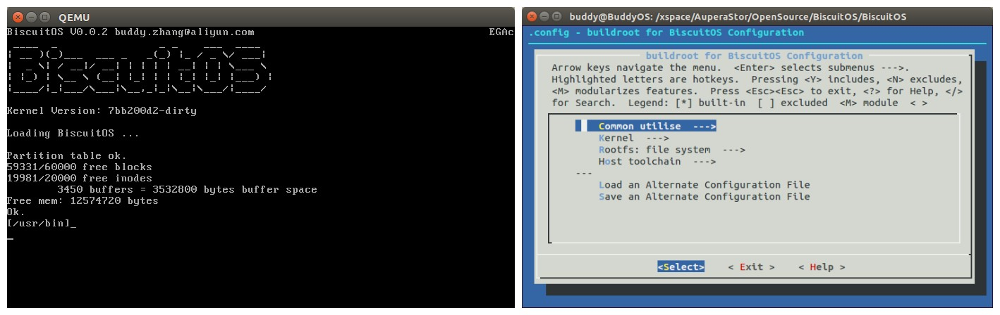

<section id="projects">
    <div class="wrapper">
        <div class="text-center">
            <h1 class="blue-title">Github Projects</h1>
        </div>
        <div id="vertical-timeline" class="light-timeline">

            <div class="vertical-timeline-block">
                <div class="vertical-timeline-icon">
                    <i class="fa fa-paw" aria-hidden="true"></i>
                </div>
                <div class="vertical-timeline-content">
                    <h4><a>dvcon_download</a></h4>
                    <p>
                        <span>dvcon_download is a script to download papers from
				dvcon US Europe. The <a
					href="https://github.com/troyguo/dvcon_download"
					target="_blank">Github Page</a> to
			obtain full source code. </span>
			<span></span>
                    	
                    </p>
                </div>
            </div>
         </div>
    </div>
</section>
